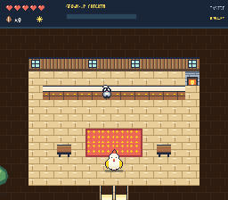
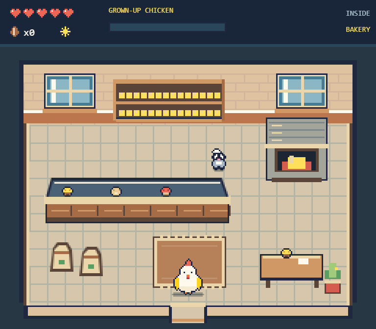
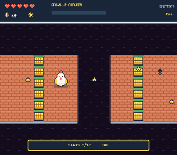
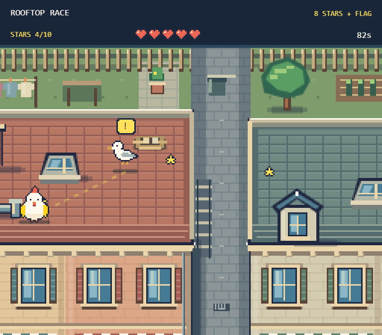
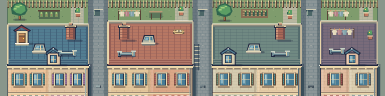

Chicklandia · applied in the game
Furnished rooms & the roofline run
The city’s 13 interiors now have their furnished layouts. The rooftop course has upper facades, back yards, three alley crossings, physical obstacles, and a nesting gull with a warning before it swoops.


Game captures. Homes and the bistro show their residents at night.



Walk around chimneys and skylights, HOP over low pipes, and GLIDE across alleys. Dodge the gull’s warned swoop or interrupt it with a peck or wing flap. Collect any 8 of 10 stars and reach the flag within 90 seconds.